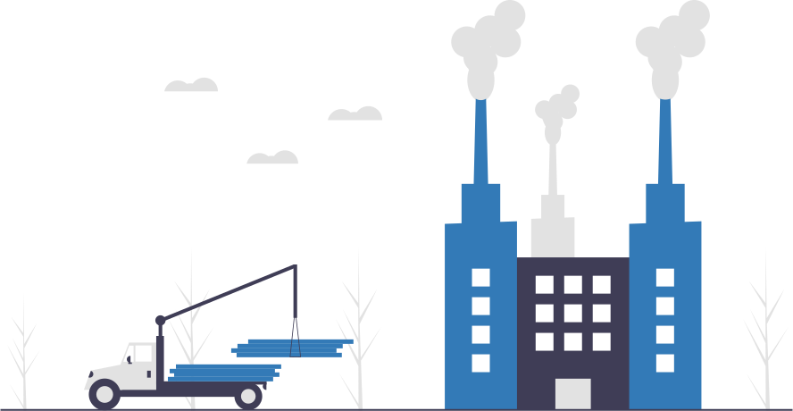

<nav class="navbar navbar-light bg-light">
    <a class="navbar-brand" href="#">
        
        Mantto App
    </a>
    <button class="navbar-toggler" type="button" data-toggle="collapse" data-target="#navbarMantto" aria-controls="navbarMantto" aria-expanded="false" aria-label="Toggle navigation">
      <span class="navbar-toggler-icon"></span>
    </button>
    <div class="collapse navbar-collapse" id="navbarMantto">
      <div class="navbar-nav">
        <a class="nav-link animate__animated animate__fadeIn animate__fast" routerLink="/"><fa-icon [icon]="faWrench"></fa-icon> Actividades Pendientes</a>
        <a class="nav-link animate__animated animate__fadeIn animate__fast" routerLink="/realizadas"><fa-icon [icon]="faCheck"></fa-icon> Actividades Realizadas</a>
        <a class="nav-link animate__animated animate__fadeIn animate__fast" routerLink="/anomalias"><fa-icon [icon]="faExclamationTriangle"></fa-icon> Anomalias Reportadas</a>
        <a class="nav-link animate__animated animate__fadeIn animate__fast" routerLink="/historico"><fa-icon [icon]="faHistory"></fa-icon> Historico de Actividades</a>
        <div class="form-inline my-2 my-lg-0">
          <button (click)="logout()" class="btn btn-sm btn-outline-danger my-2 my-sm-0"><fa-icon [icon]="faSignOutAlt"></fa-icon> Cerrar Sesion</button>
        </div>
      </div>
    </div>
</nav>